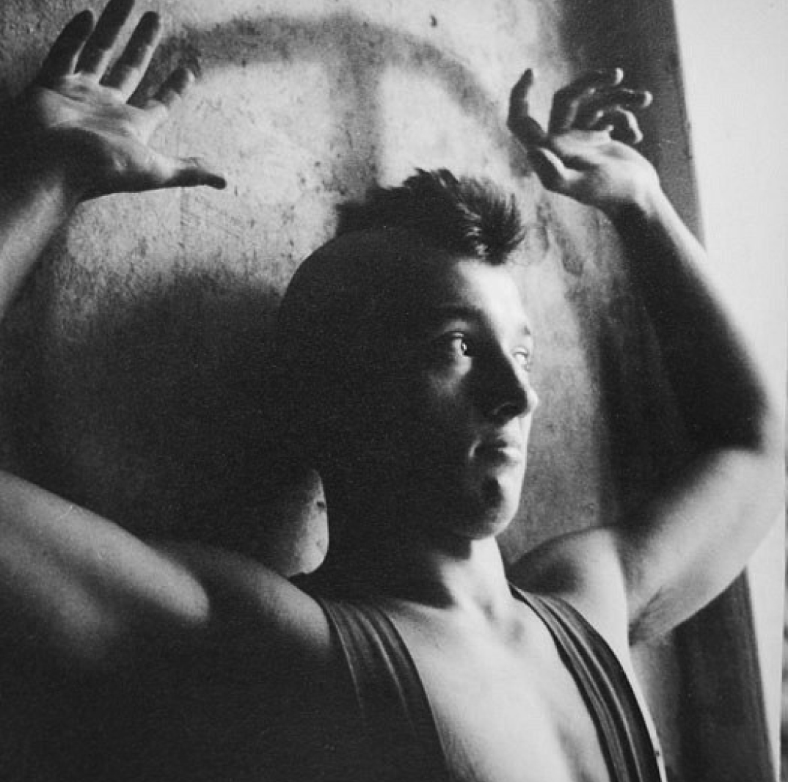
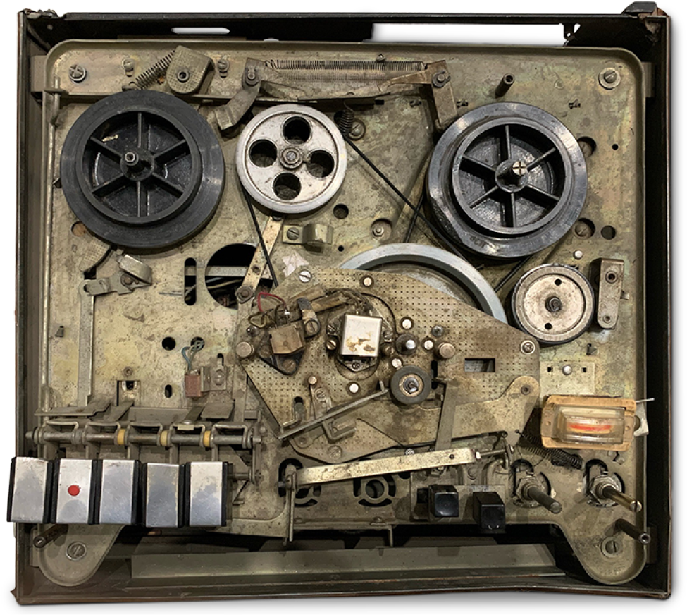
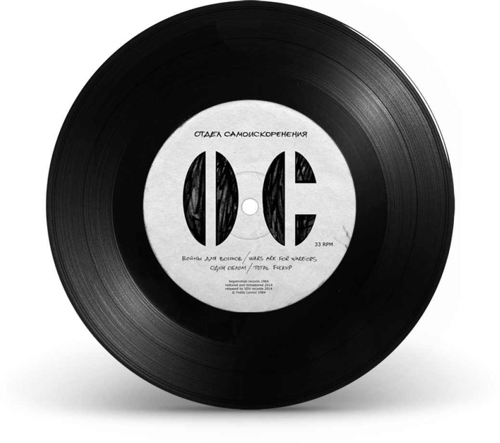
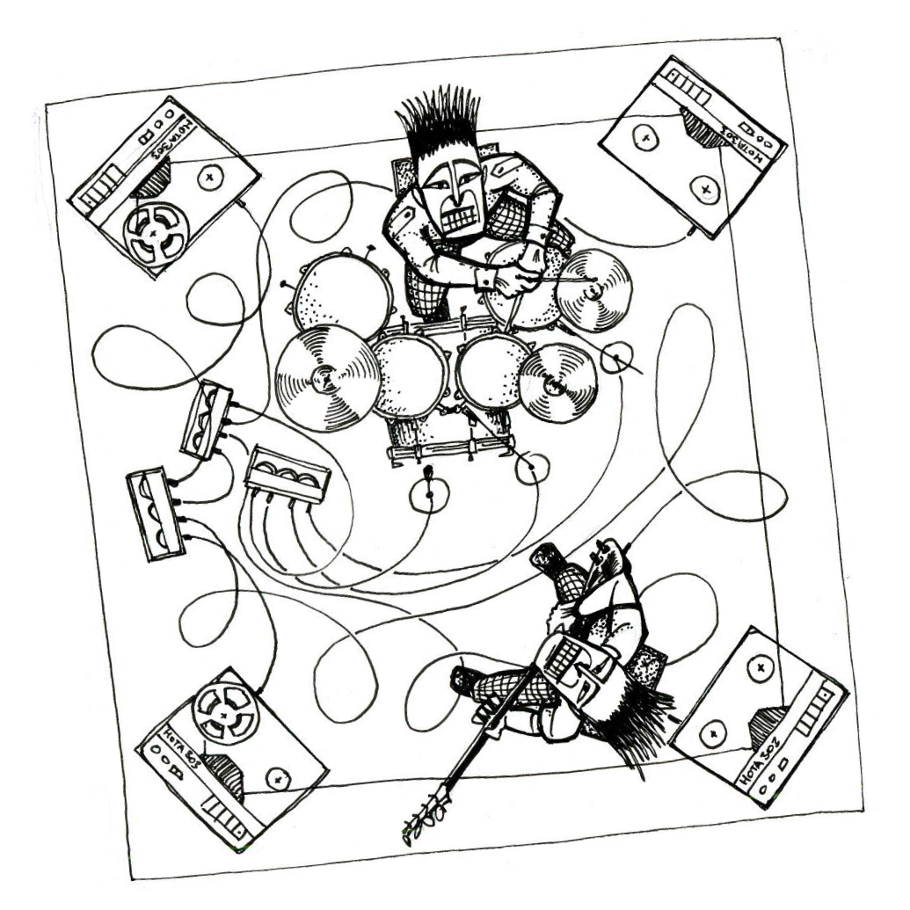

Группа Отдел самоискоренения — одна из первых советских панк-групп. Группа просуществовала с 1982 по 1984 годы, ни о каких выступлениях в то время речи даже не шло. Бессменным лидером и автором песен был Фёдор “Бегемот” Лавров, помимо него в группе играли его друзья и будушие музыканты групп Автоматические удовлетворители, Народное ополчение, Нате!, Алиса. Летом 1984 года Отдел самоискоренения был запрещён КГБ.
Отдел самоискоренения - Войны для воинов
Войны для воинов - а с меня довольно!
Фёдор ЛавровОтдел самоискоренения


Группа записывалась на подпольной студии Begemotion records, расположенной дома у Фёдора. В 11-метровой комнате стояла барабанная установка RMIF, пианино, электро-орган и кое-какие колонки на комоде. Запись производилась на бытовую монофоническую магнитофонную приставку Нота 304. 6-мм пленки тиражировались переписыванием, с оформлением фотографическими обложками.

Официально песни были выпущены на чёрном виниле в 2014 году, спустя 30 лет после записи.

Треклист
Сторона А:
- Военная монархия
Сторона Б:
- Войны для воинов
- Один облом